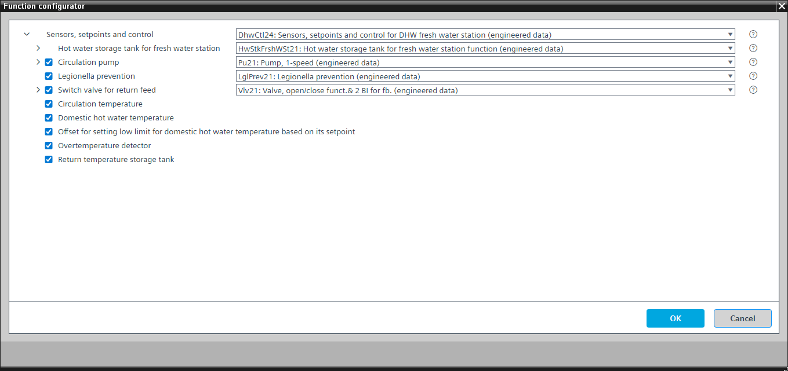

[DhwCtl24] Sensors, setpoints and control for DHW fresh water station
Program block, name / node subtype: [DhwCtl24] Sensors, setpoints and control for DHW fresh water station
Library hierarchy: Heating equipment
Family: DhwCtl
Project tree | Diagram |
|---|---|
|
|


Configurator


Program blocks are stored in the library without I/Os. Use the auto-create and auto-connect functions to create I/Os and/or to connect them to the interface blocks, e.g., R_A, CMD_B. Alternatively, take the I/Os from the folder containing the predefined I/Os in the library and/or from the plant and connect them to the interface blocks.
Function
Controls the hot water storage tank for the fresh water station charging state.
Optional functions
This program block has the following optional functions:
Option: Circulation pump (1xBO, 4xBI)
Controls a pump (Pu21). The circulation pump is switched on and off via scheduler.
Option: Legionella prevention
Used in hot water systems to prevent the growth of the legionella bacteria or as a thermal disinfectant to kill legionella (LglPrev21).
Option: Domestic hot water temperature (1xAI)
Creates an analog input for the domestic hot water temperature and reads its signal. It can generate an alarm (high and low limit).
Event detection is suppressed for the predefined I/O when the program block is off.
A program logic changes the notification class of the predefined I/O to "Notification class 4".
Option: Offset for setting low limit for domestic hot water temperature based on its setpoint
Changes the low limit for the domestic hot water temperature, e.g., by -5 K.
This option can only be applied successfully together with the optional domestic hot water temperature.
Option: Circulation temperature (1xAI)
Creates an analog input for the circulation temperature and reads its signal. It can generate an alarm (high and low limit).
Event detection is suppressed for the predefined I/O when the program block is off.
A program logic changes the notification class of the predefined I/O to "Notification class 4".
Option: Overtemperature detector (1xBI)
Reads the signal from an overtemperature detector and generates an alarm.
Option: Return temperature storage tank (1xAI)
Creates an analog input for the return temperature storage tank and reads its signal.
Option: Switch valve for return feed (1xBO, 2xBI)
Controls a switch valve (Vlv21) that feeds water into the lower part of the storage tank when the return temperature storage tank is lower than the minimum temperature of the hot water storage tank.
This option can only be applied successfully together with the optional return temperature storage tank.
Mandatory elements
Name | Description | Type | Alarm / Notification class | Trend / Type | |
|---|---|---|---|---|---|
HwStkFrshWStn | Hot water storage tank for fresh water station | [HwStkFrshWSt21] Hot water storage tank for fresh water station function | N/A | N/A | |
SpTDhw | Setpoint domestic hot water temperature | ACnfVal: Analog configuration value | N/A | No | |
Optional elements
Name | Description | Type | Alarm / Notification class | Trend / Type | |
|---|---|---|---|---|---|
LglPrev | Legionella prevention | N/A | N/A | ||
CirPu | Circulation pump | N/A | N/A | ||
Further elements that belong to this element: Sched(CirPu)| Scheduler (Circulation pump | MScheduler: Multistate scheduler | N/A | N/A | |||||
TDhw | Domestic hot water temperature | AI: Analog input | Yes, 8 | Yes, 2 | |
TCir | Circulation temperature | AI: Analog input | Yes, 8 | Yes, 2 | |
OvrTDet | Overtemperature detector | BI: Binary input | Yes, 4 | No | |
SwiVlvRtFd | Switch valve for return feed | N/A | N/A | ||
Further options
Description |
|---|
Offset for setting low limit for domestic hot water temperature based on its setpoint Elements that belong to this option: LoLmOfsTDhw | Offset for setting low limit for domestic hot water temperature based on its setpoint | ACnfVal: Analog configuration value | No | Yes, 4 |